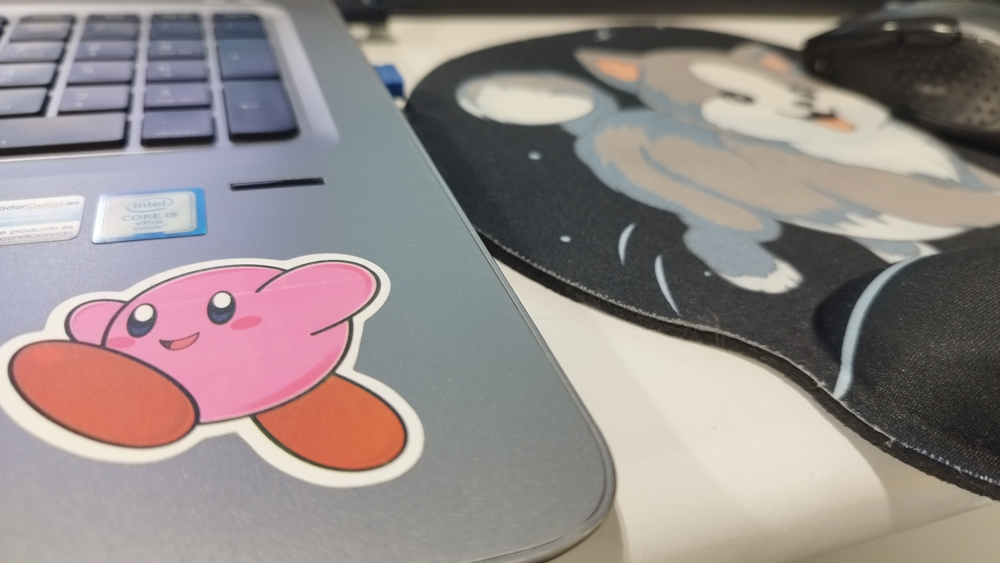

FLAC
Format sense pèrdua. Manté una qualitat molt alta i serveix com a referència.
Projecte final
Hola! Et dono la benvinguda a la meva Landing Page.
Aquí recullo diferents pràctiques:
imatges SVG VS mapa de bits, diferents formats d’àudio i
edició de vídeo amb KdenLive, tot integrant-ho a una pàgina web.
Dona't una volta i envia'm una sugerencia si et ve de gust! ^.^

Pràctica 1
En aquesta primera pràctica vaig comparar imatges vectorials creades amb SVG amb les seves versions en mapa de bits per observar diferències de qualitat, escalat i nitidesa.
Les imatges SVG són vectorials i estan definides amb formes, línies i coordenades. Això permet ampliar-les o reduir-les sense perdre qualitat, així que són molt útils per a logotips, icones o dibuixos senzills dins d’una pàgina web.
Les imatges de mapa de bits estan formades per píxels. Per això van bé en fotografies o imatges amb molts detalls, però quan s’amplien massa poden perdre nitidesa i quedar pixelades. Són formats habituals com PNG o JPG.
He volgut que les SVG es veiessin grans, mostrant que independentment de la mida, mantenen qualitat.
En canvi, les PNG son més petites, i és quan s'amplien (prova a fer zoom) que s'aprecia encara més la pèrdua de nitidesa.
En resum...
Vols veure la pràctica sencera?
Fes Click!🔗
Pràctica 2
En aquesta segona pràctica, vaig comparar diferents arxius d’àudio utilitzant la mateixa cançó per observar com canvien la mida i la qualitat segons el tipus de compressió.
M'he près la llibertat de possar una petita taula comparativa sota dels reproductors, per a resumir les característiques de cada format i facilitar la comprensió de les diferències entre ells.
T'aconsello un bon equip de so per apreciar les diferències!
Format sense pèrdua. Manté una qualitat molt alta i serveix com a referència.
Format comprimit i molt més lleuger, pensat per a web i reproducció online.
Ocupa més que un MP3 de 128 kbps, però conserva millor el detall del so.
| Format | Tipus | Qualitat | Ús habitual |
|---|---|---|---|
| FLAC | Sense pèrdua | Molt alta | Arxiu i col·lecció |
| MP3 128 kbps | Amb pèrdua | Mitjana | Web i ús general |
| MP3 320 kbps | Amb pèrdua | Alta | Música online amb millor qualitat |
Vols escoltar tots els formats?
Som-hi!🔗
Pràctica 3
Benvingut, fan de Tarantino...🩸
En aquesta pràctica vaig crear un vídeo muntatge i després el vaig
integrar en una pàgina web per mostrar el resultat final i
explicar-ne els aspectes tècnics.
Al costat del reproductor, trobaràs un resum tècnic amb les característiques del vídeo i les eines utilitzades durant el procés d'edició.
Haig d'admetre que van ser moles hores d'edició, però va ser molt divertit!
El muntatge combina música, ritme i escenes icòniques, amb transicions i efectes per donar més dinamisme al resultat final.
Et mola Kill Bill?
Ready!🔗
Contacte
Et respondre en quant pugui! 😊